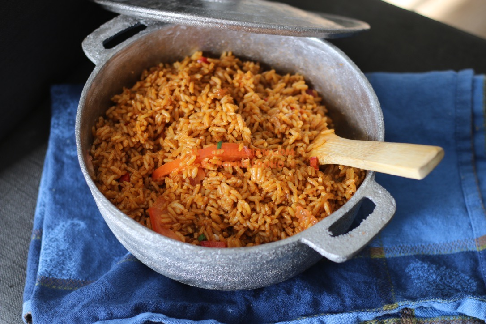
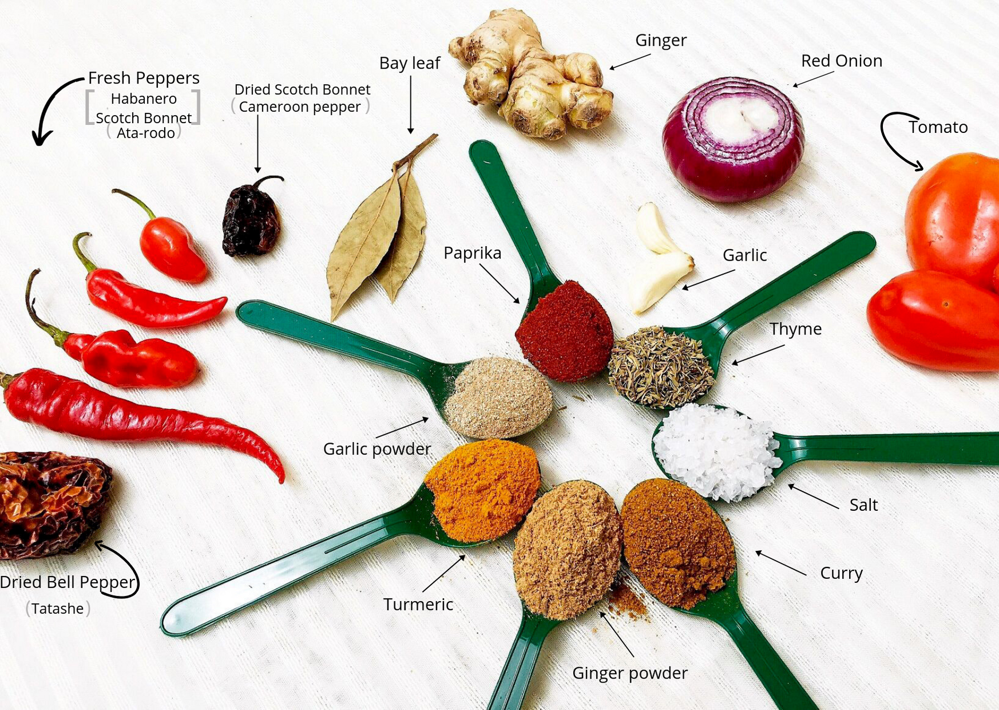

Nigeria, a country with 371 tribes speaking over 500 languages and dialects, has a diverse range of traditional
foods passed down from generations. Despite this diversity, one dish that is widely enjoyed and consumed across
all tribes, with only minor variations, is Jollof Rice.
While its origin and introduction into Nigeria is a subject of debate, it is rare to find a Nigerian who has not had Jollof Rice at least once in their lifetime. As a child, parties were synonymous with Jollof Rice. We eagerly awaited functions just for the chance to indulge in this dish. It was truly the king of all foods, with no other dish coming close to its superiority.

Jollof Rice, made with rice cooked in a flavorful tomato and pepper sauce, has become a symbol of West African cuisine. Several West African countries claim ownership of its origin and assert the superiority of their version of the dish. This staple dish has gained popularity in African diaspora communities worldwide, serving as a unifying force just as it did back in West Africa.
As such, Jollof Rice has become a community builder in the diaspora. One of the key drivers behind Jollof Rice's popularity is its distinct taste, achieved through a blend of spices, herbs, and seasonings. Jollof's versatility also enables customization with varying ingredients and spices to accommodate individual tastes within African diaspora communities.

Another factor contributing to Jollof Rice's popularity in African diaspora communities is its cultural significance. In West Africa, Jollof Rice has always been a staple at important events and celebrations and remains the one constant dish at such gatherings. In African diaspora communities, Jollof Rice serves as a symbol of West African heritage and culture. It acts as a reminder of home and its ingredients are readily available worldwide. Jollof Rice allows individuals in these communities to connect with their roots and celebrate their heritage.
Added to its taste and cultural significance, jollof rice is also popular because it is easy to make and can be prepared in large quantities. It is a popular dish for potluck events and gatherings, where individuals can share their love for jollof rice with others. In conclusion, jollof rice has become a popular dish in African diaspora communities around the world due to its taste, versatility, cultural significance, and ease of preparation. Whether it's served at a family gathering or a potluck event, jollof rice is a staple dish that brings people together and celebrates the rich cultural heritage of West Africa.